Using the equation parser
User page, as of 6 October 2026. How to open and inspect a model, compute and follow a single run, compute operating points in a batch and task scripts, diagnose a model, evaluate stored runs and sweep a map. The pictures are screenshots of the app with two invented example models: a simple gas turbine cycle as an NFML flowsheet and a compressor map as a CAS surrogate model.
The window
Open the app from the Applications menu with Open .cas file… or with Alt+C. As long as no model is loaded, the right-hand side only shows a hint; the tabs appear with the first model.
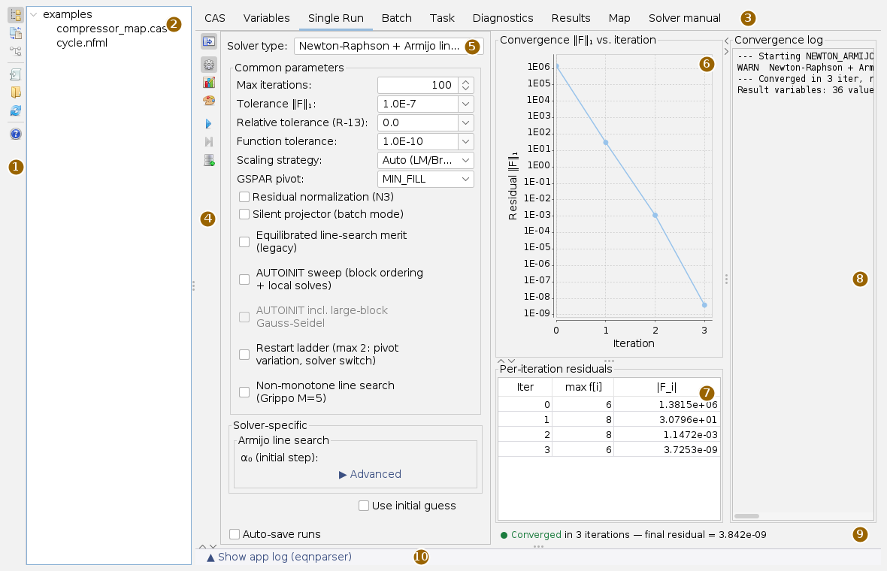
The tabs are CAS (model text with sub-tabs), Variables, Single Run, Batch, Task, Diagnostics, Results, Map and Solver manual. All dividers can be moved. The strip at the very bottom opens a log that shows only the messages of this app; dragged small, it collapses again by itself. The app has no windows of its own for the work; file choosers, error messages and the confirmations before deleting and saving appear as dialogs.
The app bar
The buttons carry only icons; what they do is in the tooltip. The upper three switch the left area between the working directory and two translation cards; the area can also be closed completely. The lower ones act on the model and the help.
| Icon | Tooltip | What happens |
|---|---|---|
 | Show/hide working directory | Show the tree with the models or close the area. |
 | Translate a control deck (.mdl) to NFML | Card for translating models of another simulation system, see below. |
 | Translate a block diagram model (.mdl) to NFML | Second translation card, see below. |
 | Open model… | Choose a .cas or .nfml file. Its folder becomes the working directory. |
 | Choose working directory | Choose a folder; the tree shows the models in it. |
| Reload working directory | Read the tree again, for example after a translation. | |
 | Help: opens the user guide of this app in the docs (like F1) | This page in the docs app. |
Opening a model
- Choose a folder with Choose working directory. The tree shows all
.casand.nfmlfiles in it, also in subfolders down to the eighth level; folders without a model and hidden folders are left out. Control decks that one of the two translation cards understands appear as well. - Click a model in the tree. It is read and bound in the background; then the tabs appear and the CAS tab shows the text.
- Alternatively Open model…: the file is loaded and its folder becomes the working directory.
The file extension decides which parser reads: .nfml goes through the NFML path with flowsheet, everything else through the CAS parser. INCLUDE lines and map lines are resolved relative to the model file; the file text is shown, the resolved text is computed. Loading another model cancels a running single run and discards the last result. Next to each model the app creates a result store (see Files). The syntax of both formats is in the CAS syntax and the NFML syntax.
Inspecting the model
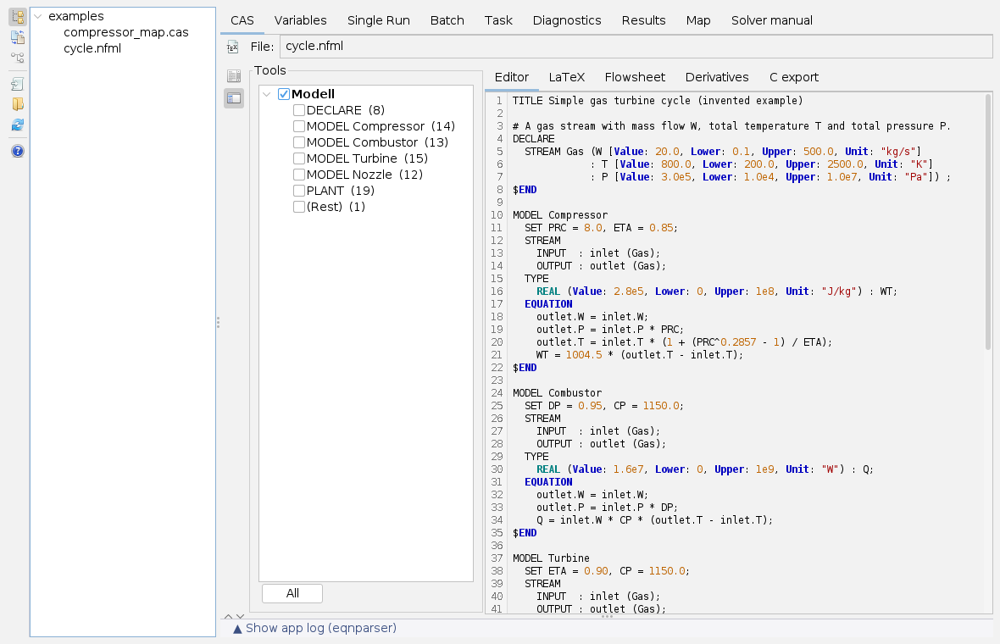
The Editor sub-tab shows the model text with syntax colouring and line numbers. The text is read-only: change the model in the file, then click it again in the tree. The narrow bar on the left opens two cards:
| Icon | Card | What it does |
|---|---|---|
 | View | Line numbers on and off, font (monospaced only) and font size. |
 | Structure | The blocks of the model (for NFML DECLARE, MODEL, PLANT …, for CAS the comment banners). Ticked blocks are shown alone; the line numbers stay those of the file, so parser messages still match. All clears the selection. The whole model is always computed. |
The button  next to the file field renders the equations as formulas and switches to the LaTeX sub-tab. It also writes an HTML file
next to the file field renders the equations as formulas and switches to the LaTeX sub-tab. It also writes an HTML file <model>-gleichungen.html next to the model if the folder is writable.
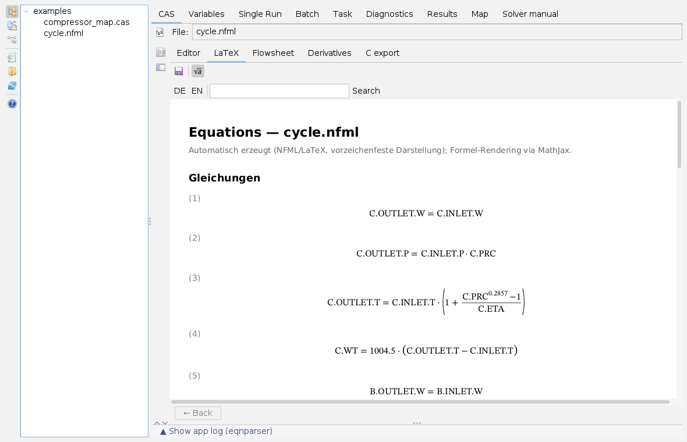
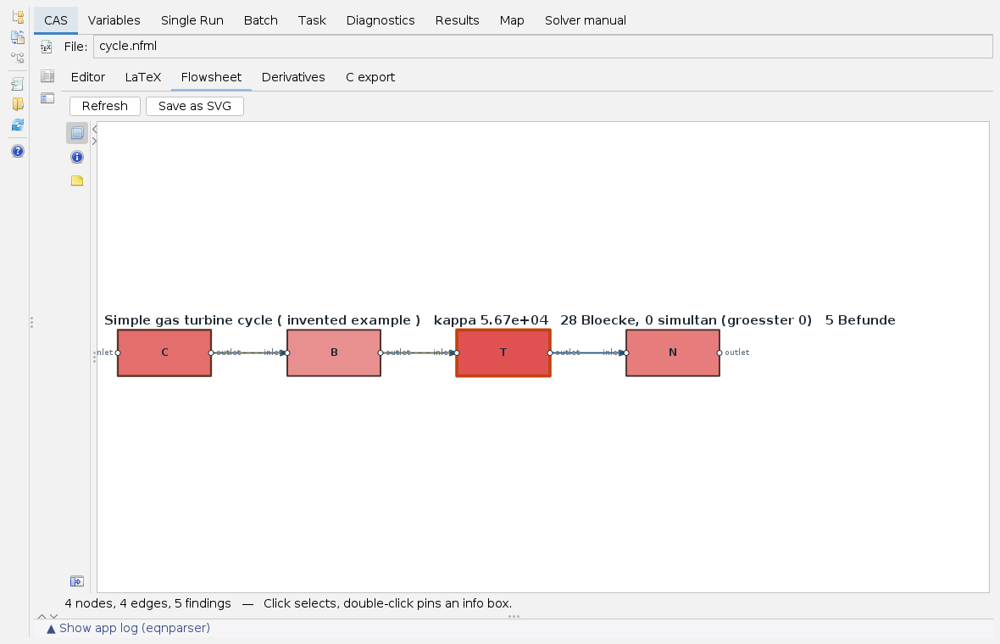
In the LaTeX tab,  saves the formula page as an HTML file to a location of your choice;
saves the formula page as an HTML file to a location of your choice;  switches between the symbols given in the declaration (
switches between the symbols given in the declaration (Latex="…") and the variable names.
The Flowsheet exists only for NFML models with a flowsheet; flat models have no connections. It shows the units as blocks and the streams as edges, coloured by the findings of a diagnosis at the start point; no solve is needed for that. A click selects a block, a double-click pins an info box. The cards at the edge of the picture show or hide layers (units, streams, couplings, equations), show the details of the selected block and set which result sets the info box compares: start point, solution of the last run and stored runs, with a deviation column. Save as SVG writes the picture including the boxes. More about the picture on the framework-flowsheet page.
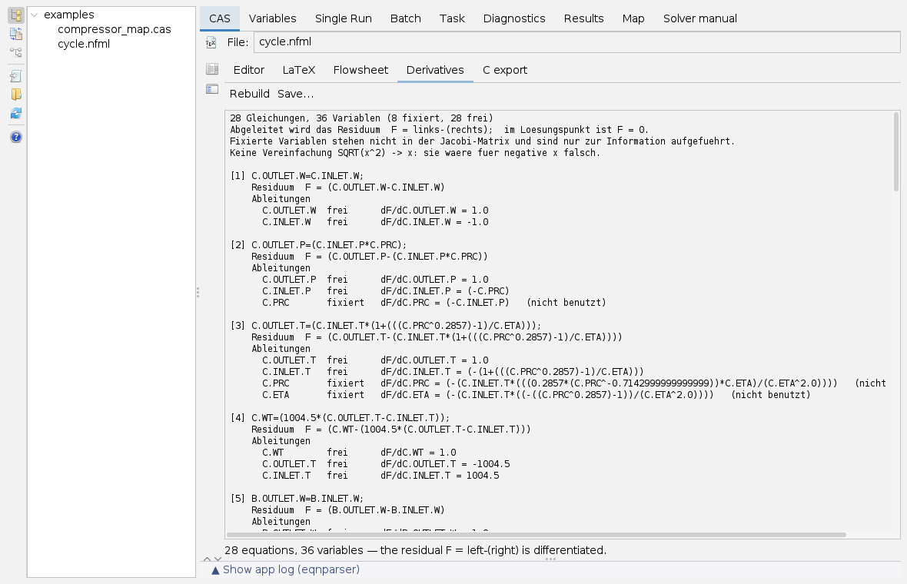
The Derivatives and C export sub-tabs build themselves when you switch to them; Rebuild and Generate repeat that. Save… stores the derivatives as a text file, for the C export the header and source file into a chosen directory. Whatever cannot be translated to C appears as a comment in the source and in the status line; the system is then incomplete. Both tabs use the last run, otherwise the loaded model.
Variables
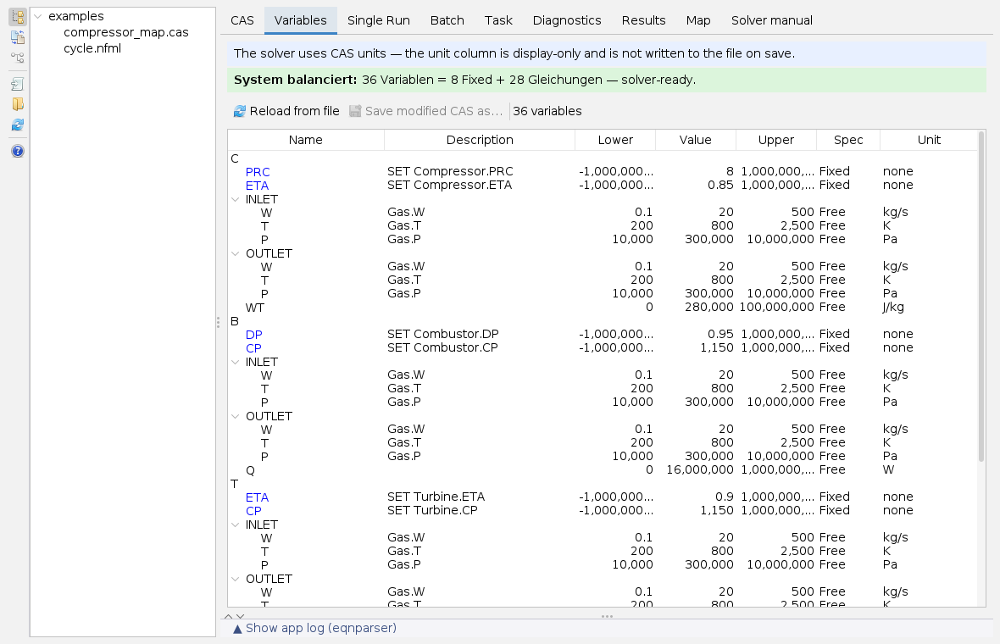
The table groups the variables by units and streams and shows description, lower bound, value, upper bound, Fixed or Free and unit. The line above counts variables, fixed variables and equations, reports whether the system is square, and reports parser errors. Bounds, value, status and description can be changed in the table; single run and batch compute with this edited model. In the unit column another display unit can be chosen; the solver keeps computing in the units of the file.
Reload from file discards the changes. Save modified CAS as… becomes available as soon as something has changed and writes the values to a new file; it cannot find variables in long-form declarations and therefore asks.
Computing a single run
- Single Run tab. The bar (4) opens three cards:
 Solver settings,
Solver settings,  Chart options and
Chart options and  Series style of the convergence chart; the top button hides the card area.
Series style of the convergence chart; the top button hides the card area. - In the Solver settings card, choose the method under Solver type. The default is Newton with sparse LU factorisation and Armijo line search. Below are the common settings (iterations, tolerances, scaling, pivoting, start value aids) and those of the chosen method; Advanced opens more. Every field explains itself in its tooltip.
 Run Solver. The run goes in the background; the convergence chart (6) plots the sum of the residual magnitudes per iteration, the table (7) the largest equation and the magnitude, the log (8) start, warnings and end.
Run Solver. The run goes in the background; the convergence chart (6) plots the sum of the residual magnitudes per iteration, the table (7) the largest equation and the magnitude, the log (8) start, warnings and end.- The result line (9) reports Converged, Converged with bound violation with the variables outside their bounds, NOT converged, an error or the cancellation.
 Save run to DB is available after a converged run and stores it in the model's result store. With Auto-save runs below the card this happens after every finished run, also a non-converged one.
Save run to DB is available after a converged run and stores it in the model's result store. With Auto-save runs below the card this happens after every finished run, also a non-converged one.
 Stop does not halt the solver at once: it finishes its iteration, then the result is discarded. The single run computes on a copy of the model; the values in the Variables tab stay the start values. The methods themselves are described on the pages Newton methods and Continuation.
Stop does not halt the solver at once: it finishes its iteration, then the result is discarded. The single run computes on a copy of the model; the values in the Variables tab stay the start values. The methods themselves are described on the pages Newton methods and Continuation.
Operating points in a batch
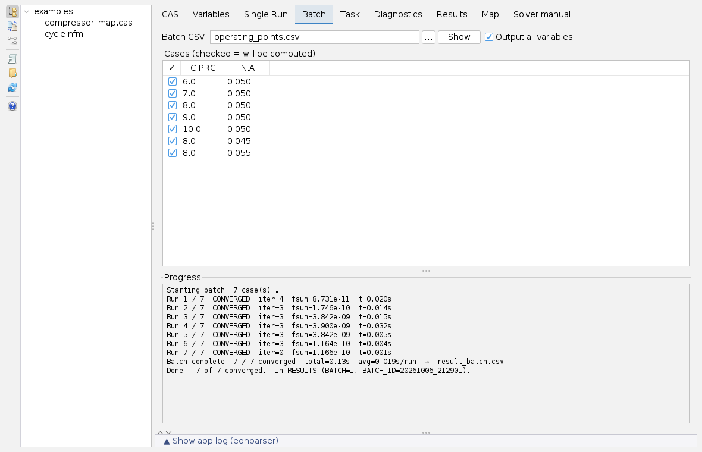
A batch computes the same model with different numbers. The input is a CSV file: the header names the variables, every further line is one case; lines starting with # or // are comments, the separator is a comma.
# Operating points C.PRC, N.A 6.0, 0.050 8.0, 0.045
- Choose the file with … or enter the path and press Show. The cases appear as a table; the check box in front of a row decides whether it is computed.
- Run batch. The progress shows status, iterations, residual and time for each case; a failed case does not stop the batch. Cancel with the button in the waiting notice.
The batch uses the settings of the Solver settings card. The result of one case is the start value of the next (warm start); Cold starts only starts every case from the model's start values and so makes it independent of the order. Output all variables writes out all quantities, not only the inputs and free variables. Every case goes to the result store, all with the same batch ID; in addition the runner writes a file result_batch.csv.
Task scripts
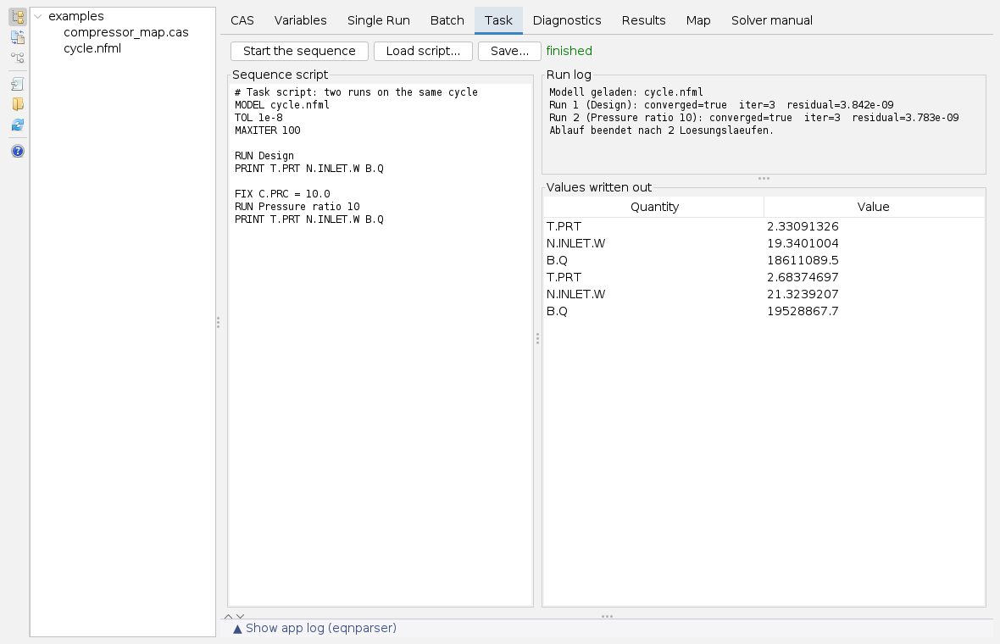
A task script computes several runs on one system with changing specification; the converged state is the start value of the next run. That distinguishes it from the batch, which computes the same case with other numbers. One statement per line, # starts a comment:
| Statement | Effect |
|---|---|
MODEL file | Load the model (once, first). A relative path counts from the start directory of the program, not from the app's working directory. |
TOL, MAXITER, RELAX, SOLVER | Tolerance, iteration limit, relaxation, method. |
ONFAIL STOP | CONTINUE | Stop or continue after a non-converged run. |
FIX x = value, FIX x, FREE x | Fix a variable at a value or at its solved value, free it. Think of FIX and FREE in pairs, otherwise the system is over- or underdetermined. |
SET x = value, TRANSFER a -> b | Set a value; transfer a solved value. |
RUN [name], PRINT x y … | Solve; write values to the table at the bottom right. |
LOOP n [UNTIL x tol] … ENDLOOP | Repeat until the change of x falls below tol. |
Start the sequence runs the script; the run log names every run with convergence, iterations and residual, errors are marked there with !!. Load script... replaces the text, Save... stores it; the script is saved, not the result. The complete language is in the NFML syntax.
Diagnostics
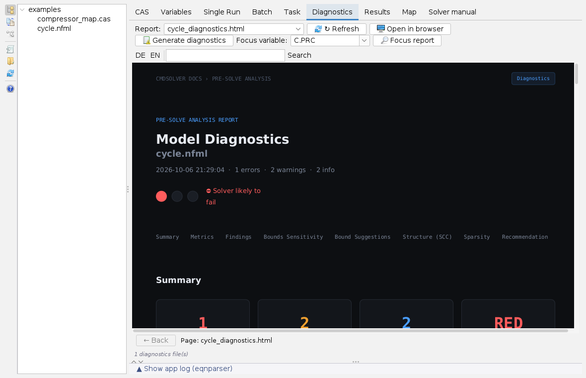
Generate diagnostics checks the model at the start point (or, after a run, its state): condition, residuals, bounds and the decomposition into strongly connected blocks. The report is written as <model>_diagnostics.html next to the model and shown at once. For a single quantity, choose it under Focus variable and press Focus report; that gives <model>_focus_<variable>.html.
The Report selection lists all HTML reports next to the model, also the formula page from the LaTeX tab and reports created on the command line; Refresh searches again, which also happens when you switch to the tab. Open in browser shows the report in the system browser. The diagnostics judge the start point, not the solution: in the example they predict difficulties, and the run still converges in three steps. The methods behind it are on the Decomposition page.
Evaluating stored runs
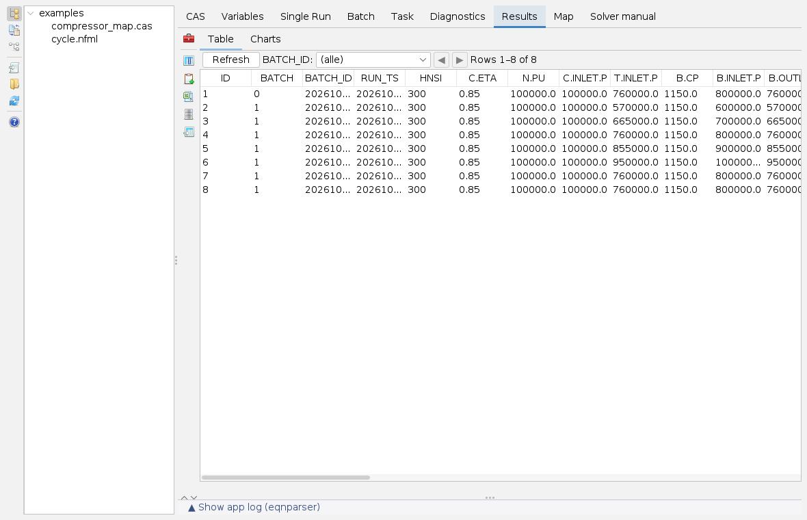
The table shows all stored runs of the loaded model: ID, BATCH (0 single run, 1 batch), BATCH_ID (batch identifier), RUN_TS (time), HNSI (status: 300 converged, 1300 converged with violated bounds, other values not converged) and then one column per variable. BATCH_ID filters to one batch, the arrows page through. The Charts sub-tab plots the shown columns against each other.
The button at the top left opens the tool bar:
| Icon | Card | What it does |
|---|---|---|
 | Displayed columns | Show only chosen variables (the ID always stays); Show all undoes this. |
 | Clipboard | Copy the shown data tab-separated with a header, ready to paste into a spreadsheet. |
 | CSV export | Save the shown data as a CSV file. |
 | DB tools | Delete selected rows, a whole batch or everything, each after a confirmation. Deleted is deleted. |
 | Reference comparison | Match a second table (CSV or H2) by a key and compute columns from it, for example {{ETA}} - {{ref:ETA}}; the result goes to the charts and optionally into a new table. |
Sweeping a map
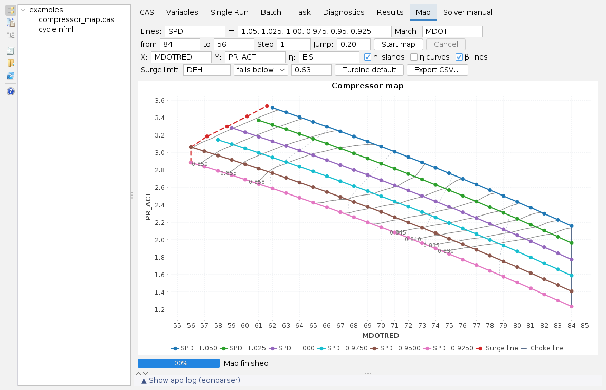
The tab computes a compressor or turbine map point by point with the loaded CAS model. The fields mean:
| Field | Meaning |
|---|---|
| Lines | The outer variable (for example the speed) and its values, comma-separated; one line per value. |
| March, from, to, Step | The inner variable along which each line is swept. |
| Jump | Relative threshold for the warm start (0 switches it off). If the solution jumps further, the point is recomputed from the model's start values; a failed point also gets a cold start. |
| X, Y, η | The plotted quantities; an empty X means the march variable. |
| η islands, η curves, β lines | Lines of constant efficiency, efficiency over flow on a second axis, auxiliary lines between choke (β = 0) and surge (β = 1). |
| Surge limit | Criterion quantity (a scalar or the prefix of an array, then the minimum counts), direction (falls below for a compressor, exceeds for a turbine) and limit. Empty: no criterion. |
Start map computes in the background, line by line with warm start; converged points appear in the picture at once. A failed point or a violated criterion ends the line. At the end the app connects the last points to the surge line, draws the choke line and adds islands and β lines. Cancel stops, Export CSV… writes all points; the mouse wheel zooms in the picture. Turbine default switches the fields to a turbine map.
Translating models of other systems
Two cards of the bar translate models of other simulation systems into NFML decks from a matching unit library: one translates control decks of a performance simulation system, the other block diagram models (.mdl, text format or text package). The tree of the working directory recognises such models; a click opens the matching card. Both cards are at most 360 px wide:
- At the top are the model, the companion files (inputs, run script, setup script), the library and the target deck; the card suggests them, the folder buttons and fields change them.
- Translate writes the deck, binds it and opens it like any model. Solve or Solve design also solves it; for control decks the card compares with a reference table found nearby and computes the chosen cases with Off-design.
- Result, equation count, findings and deviations appear in the card's log.
Files next to the model
| File | Created by |
|---|---|
<model>.mv.db | Result store (H2), created on loading; table RESULTS with all stored single and batch runs. |
<model>-gleichungen.html | TeX button in the CAS tab. |
<model>_diagnostics.html, <model>_focus_<variable>.html | Generate diagnostics, Focus report. |
result_batch.csv | Batch run (in the start directory of the program). |
If the result store cannot be opened, Save run to DB asks for an H2 file and stores the run there as a table of its own. When the workspace is saved, the app remembers the model, the working directory and all 39 solver settings; on restore the model is read again and its result store opened.
Help and solver manual
The help button of the bar and F1 open this page in the docs app. The Solver manual tab contains the documentation shipped with the equation solver in German and English, 28 pages per language: getting started on the command line and through the programming interface, troubleshooting, example models, the individual methods, options, batch mode, parser syntax and built-in functions. The theory is summarised on the envisionz-commandline-eqnparser page and its subpages.
Limits
- The model text can only be read in the app; the file is where it is edited.
- Stop takes effect after the current iteration; the result of a cancelled run is discarded.
- After a single run the Variables tab still shows the start values; the solution is in the result store, the flowsheet and the diagnostics.
- The map reads CAS models only.
- Some labels of the solver card and the Variables tab are English in both languages, and some messages of the computing cores (task log, derivatives, diagnostics report) are German or English in both languages.
Icons: Fugue Icons by Yusuke Kamiyamane, licence CC BY 3.0.